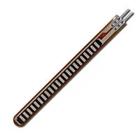

Component Selection (Individual — Flex Sensor Subsystem)
Block: Flex Sensor
Role: Measures bend angle; resistance increases with bend. Routed through a divider to 0–5 V for the ADC.
| Solution | Photo | Cost | Link | Pros | Cons |
|---|---|---|---|---|---|
| Option 1: Spectra Symbol FS-L-095-103-RH (95 mm, 10 kΩ) |  |
~\(16–\)20 | Digi-Key product page | • Stock 10 kΩ • Clear datasheet & ordering guide • “RH” solder tab option | • ±30% R tolerance • Needs tail strain relief |
| Option 2: Spectra Symbol FS-L-060-103 (60 mm) |  | ~\(15–\)18 | Mouser FS-L-060-103 | • Shorter length for tight spaces • Same 10 kΩ nominal • Similar calibration behavior | • Smaller absolute ADC swing for same bend |
| Option 3: Flexpoint Bend Sensor (10 kΩ class) |  |
~\(10–\)20 | Mouser bend sensors | • Alternative vendor/lead times • Multiple formats/lengths | • Different mechanical stack-up; re-characterization may be needed |
{kind=link}
Choice:
FS-L-095-103-RH (95 mm, 10 kΩ)
FS-L-095-103-RH
Rationale: Fits the mechanical reach and provides a large, clean ADC span with a simple divider. It’s well-documented and readily available in class-friendly quantities.
Block: Voltage Divider
Role: Convert the flex sensor’s resistance change to a 0–5 V signal for RA0/AN0; optionally filter/buffer.
| Solution | Photo | Cost | Link | Pros | Cons |
|---|---|---|---|---|---|
| Option 1: Simple divider (10 kΩ sensor vs fixed Rin 10–22 kΩ) | <$0.10 | Voltage divider (ref) | • Minimal BOM • Works straight into ADC | • Source impedance varies → sampling error • No anti-alias filtering | |
| Option 2: Divider + RC low-pass (e.g., 1 kΩ + 0.1 µF) | <$0.20 | RC low-pass (ref) | • Noise reduction • Stabilizes readings • Limits aliasing | • Adds latency; cutoff must be chosen | |
| Option 3: Buffer with rail-to-rail op-amp (MCP6002) | ~\(0.40–\)0.80 | MCP6002 product · Datasheet PDF | • High input Z; isolates ADC • Rail-to-rail @ 5 V • Easy to add active filter/gain | • Slightly higher BOM & layout effort |
{kind=link}
{kind=link}
{kind=link}
Choice: Option 2: Divider + RC, with an upgrade path to Option 3 if noise or ADC impedance issues are observed.
Rationale: RC filtering stabilizes the measurement with negligible cost/complexity; buffering remains a drop-in improvement if needed.
Block: 5 V Regulator (from 9 V source)
Role: Provide regulated 5 V to the Curiosity Nano + sensor chain.
| Solution | Photo | Cost | Link | Pros | Cons |
|---|---|---|---|---|---|
| Option 1: onsemi MC7805ACTG (TO-220, 5 V / 1.5 A) |  |
~$1 | Digi-Key MC7805ACTG | • Simple & robust • Easy to heatsink • Low EMI | • Linear → heat from 9→5 V at higher I |
| Option 2: TI LM2940-5.0 (TO-220, ~1 A) |  |
~\(2–\)3 | TI LM2940 product page | • Lower dropout than 7805 • Good line/load behavior | • Still linear (heat) • ~1 A limit |
| Option 3: LM2596 buck module (5 V, up to ~3 A) | ~\(3–\)6 | LM2596 module (Addicore) | • High efficiency • Low heat • Higher current headroom | • Module height; EMI care/layout practice |
{kind=link}
Choice: MC7805ACTG MC7805ACTG for the current subsystem load; I would switch to LM2596 if total current rises.
Rationale: For Nano + sensor (<~150 mA worst-case), a 7805 is the quietest, lowest-risk choice. If future peripherals raise current or thermal budget, the buck module avoids dissipation.
Thermal note: \( P*{\text{diss}} = (9\ \text{V} - 5\ \text{V}) \times I*{\text{total}} \).
Example: at 120 mA → \(0.48\ \text{W}\) (fine on TO-220 with airflow). Add a small heatsink if \(>0.8\ \text{W}\).
Block: External Power Source (feeds the 5 V rail)
| Solution | Photo | Cost | Link | Pros | Cons |
|---|---|---|---|---|---|
| Option 1: 9 V wall adapter, 2.1 mm barrel (center +) | ~\(8–\)12 | CUI DPD series datasheet | • Clean, regulated • Plug-and-play • No charging concerns | • Tethered to mains | |
| Option 2: 6×AA holder (9 V alkaline / ~7.2 V NiMH) |  |
~\(1–\)3 | DFRobot 6×AA holder | • Cheap, simple • Field-portable | • Requires cells/charger • V droop under load |
| Option 3: 2×18650 holder (7.4 V nominal) + buck to 5 V |  |
~\(2–\)5 (+ cells) | Parts-Express 2×18650 holder | • High energy density • Reusable cells | • Li-ion safety/charging management |
{kind=link}
Choice: 9 V wall adapter 9V adapter for bench bring-up; consider 2×18650 + buck for mobile demos later.
Rationale: The adapter minimizes risk and simplifies testing; battery paths add charging/cutoff complexity not needed for MVP.
Block: Connectors (sensor input + subsystem headers)
| Solution | Photo | Cost | Link | Pros | Cons |
|---|---|---|---|---|---|
| Option 1: JST-XH (2.5 mm pitch) wire-to-board | Low | JST XH datasheet | • Locking friction • ~3 A (AWG22) • Widely available | • Not breadboard-friendly | |
| Option 2: Molex/JST-XH assortment kit | \(20–\)30 | Adafruit JST-XH kit (PDF) | • Handy assortment for lab builds | • Bulk purchase; storage overhead | |
| Option 3: 0.1″ (2.54 mm) pin headers + housings | Very low | Adafruit 0.1″ break-away header | • Breadboard-compatible • Lowest cost | • No latch; can pull loose |
{kind=link}
{kind=link}
Choice: JST-XH JST-XH on the PCB for field connections; 0.1″ headers for bench adapters.
Rationale: XH gives retention and current capacity on-device; 0.1″ is convenient during prototyping.
Microcontroller
| Solution | Photo | Cost | Link | Pros | Cons |
|---|---|---|---|---|---|
| PIC18F57Q43 Curiosity Nano (Dev Board) | ~\(25–\)35 | Microchip DM164150 | • On-board debugger • Fast bring-up • Known pinout | • Larger footprint • Dev-board BOM cost | |
| Bare PIC18F57Q43 on custom PCB | ~\(3–\)6 | PIC18F57Q43 product | • Lowest per-unit cost • Small footprint | • Needs programming/debug HW • Longer bring-up | |
| Alt MCU Dev Board (ATmega4809 Curiosity Nano) |  |
~\(25–\)30 | ATmega4809 Curiosity Nano | • Similar toolchain • Many examples | • Porting effort • Different peripherals |
{kind=link}
Choice: PIC18F57Q43 Curiosity Nano Curiosity Nano Rationale: Lowest risk and fastest path for this course: on-board debugger, USB power, and immediate access to RA0/RA2 (ADC) + RA1/RB2/RC4 (digital outs). Provided in class
Pin Table
| Function | PIC Pin | Notes |
|---|---|---|
| Flex sensor ADC | RA0 / AN0 | Divider output 0–5 V |
| Rotary sensor ADC (external) | RA2 / AN2 | From Rotary subsystem (interface only) |
| Motor control 1 (digital out) | RA1 | To Motor subsystem via Connector 2 |
| Motor control 2 (digital out) | RB2 | 〃 |
| Motor control 3 (digital out) | RC4 | 〃 |